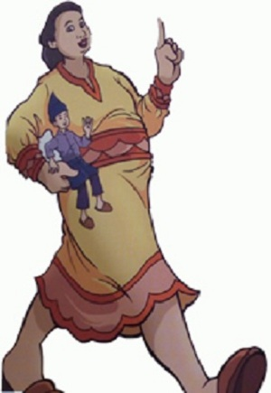
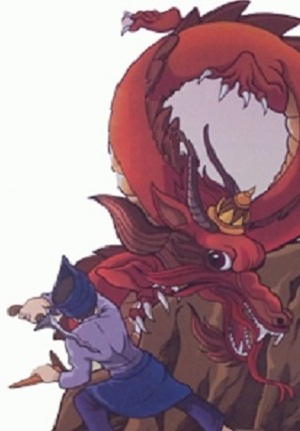

La Sirimbone
( Cerita Rakyat Sulawesi Tenggara )
La Sirimbone adalah seorang anak laki-laki yang baik hati. Ia tinggal bersama ibunya, wa Roe. Ayahnya meninggal saat ia masih kecil. Suatu hari, seorang pedagang kain dari Desa La Patamba datang menemui mereka. Saat melihat Wa Roe, La Patamba langsung jatuh hati, ia pun menikahi La Patamba. Namun, setelah menikah, rupanya La Patamba mengingkari janjinya. Ia meminta Wa Roe untuk membuang anaknya itu ke hutan. Dengan berat hati terpaksa Wa Roe membuang anak satu-satunya.
Sepeninggal ibunya, La Sirimbone meneruskan perjalanannya ke dalam hutan. Setelah beberapa hari berjalan, ia menemukan jejak kaki. Bukan Sembarang jejak, jejak kaki itu sangat besar. Tiba-tiba Bumi bergetar, ternyata getaran itu disebabkan oleh perempuan raksasa yang sedang menumbuk. La Sirimbone berlari mendekati raksasa itu. Dengan takut, La Sirimbone menceritakan asal-usulnya. Ternyata raksasa itu adalah raksasa yang baik hati. Ia merasa iba pada La Sirimbone dan mengizinkannya untuk tinggal di situ. Namun setelah beberapa hari, ia mulai bosan. Karena itu ia meminta izin untuk pergi menangkap ikan. ernyata, hari itu La Sirimbone sangat beruntung, ia mendapat banyak ikan. Sebelum pulang, ia meninggalkan bubunya dan berharap esok pagi bubu itu akan penuh dengan ikan.
Keesokan harinya, ia meminta izin lagi untuk keluar rumah. Ia kembali ke sungai untuk memeriksa bubunya. Aneh, tak seekor ikan pun yang masuk. Ia memasang umpan lagi dan menunggu. Karena lelah menunggu, ia memutuskan untuk berjalan-jalan sebentar. Alangkah kagetnya ia saat kembali ke sungai. Ikan-ikan dalam bubunya dimakan oleh jin! Dengan marah La Sirimbone menyerang jin itu. Karena tak siap, jin itu kalah dan memberikan cincin dapat menyembuhkon orang sakit dan membangkitkan orang yang meninggal. Sejak memiliki ketiga benda pusaka itu, La Sirimbone sering membantu orang.
Suatu hari, saat La Sirimbone sedang berjalan-jalan ke desa tetangga, ia mendengar suara tangis seorang gadis. Gadis itu bernama Wa Ngkurorio. Tib-tiba seeokor itu datang dan siap menyantap Wo Ngkurorio. Gadis itu gemetar. la takut luar biasa. Namun La Sirimbone menenangkannya. Dengan tenang, ia berbisik memberi perintah pada keris pusakanya untuk menikam naga itu. Dalam sekejap, keris itu menusuk perut naga tersebut don mengoyak-oyak perutnya. Naga itu mati seketika. Wa Ngkurorio sangat takjub melihat kejadian tersebut, demikian pula dengan orangtuanya dan Seluruh warga desa. Sebagai ucapan terima kasih mereka meminta La Sirimbone untuk tinggal di desa mereka. La Sirimbone pun bersedia. Ia kemudian pulang untuk berpamitan pada raksasa yang telah membantunya selama ini. Mulai saat itu La Sirimbone hidup bahagia dan damai bersama sahabat-sahabat barunya.